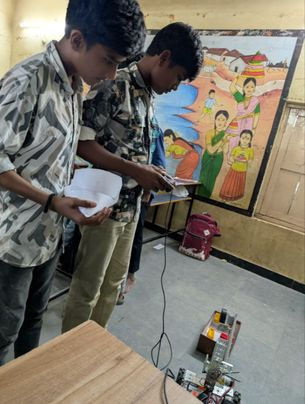

International
India outreach
We traveled to a region of India where robotics and engineering education was virtually absent. Across five classes at Madinaguda Government School in Telangana, we presented what robotics is and what careers it opens — overcoming a complete language barrier to do it. We let students drive a robot we'd built from real FTC parts, then ran a paper-slider engineering competition they went all out on.
Result: the school launched an engineering class, giving 400 students a path into STEM.
The team explained everything in a simple, easy to understand way, which made learning exciting and fun. I now dream of becoming an engineer.